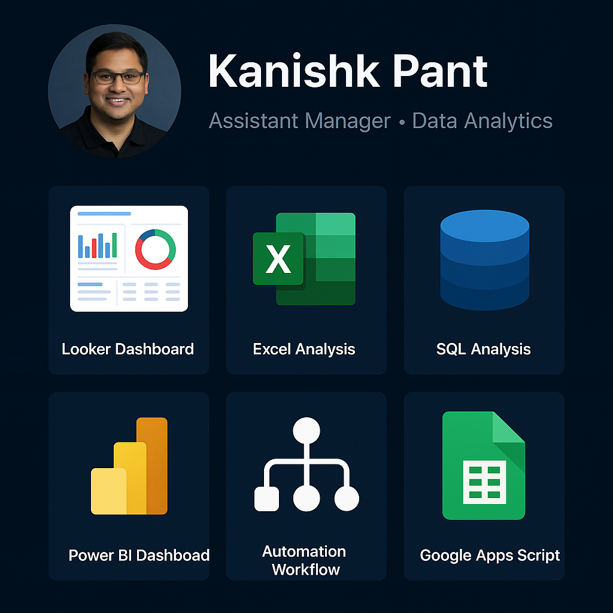

Looker Dashboard
Designed semantic model and interactive Looker explores to deliver actionable insights with scheduled reports and access controls.
Data-driven Assistant Manager with 9 years of expertise in data analytics, WFM, and business intelligence. Skilled in developing dynamic dashboards, automating reporting workflows, and driving operational efficiency using tools like Power BI, SQL, Looker, and Google Data Studio. Passionate about delivering actionable insights, streamlining processes, and empowering organizations to make informed, strategic decisions.
Designed semantic model and interactive Looker explores to deliver actionable insights with scheduled reports and access controls.

Macro-enabled executive pack and Power Query transformations used for reconciliations and KPI reporting.

SQL-driven analytics with window functions and optimized queries to support reporting and ad-hoc requests.

Interactive Power BI solution with row-level security, incremental refresh and optimized DAX measures.

End-to-end workflow automation to deliver reports and reduce manual effort.

Custom Google Apps Script solutions for automating Sheets and Gmail workflows.
Use Prev / Next to navigate through projects (2 at a time). On mobile this will show 1 at a time.